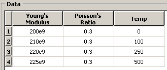

Abaqus/CAE sequences#
Some methods take arguments that are described as a sequence of sequences of Floats or a sequence of sequences of Ints. Data that are entered into the table editor in Abaqus/CAE appear as a sequence of sequences in the equivalent Abaqus Scripting Interface command. In effect the data are a two-dimensional array. The data across one row form one sequence, and multiple rows form a sequence of those sequences.
For example, consider the case where the user is creating an elastic material and describing a temperature-dependent behavior.
{kind=link}

The equivalent Abaqus Scripting Interface command is
mdb.models['Model-1'].materials['steel'].Elastic(
temperatureDependency=True, table=(
(200.0E9, 0.3, 0.0),
(210.0E9, 0.3, 100.0),
(220.0E9, 0.3, 250.0),
(225.0E9, 0.3, 500.0)))
The table argument is described in the references as a sequence of sequences of Floats.
Lists, tuples, strings, and arrays are described in Sequences. In addition, the Abaqus Scripting Interface defines some of its own sequences that contain objects of the same type.
GeomSequence
A GeomSequence is a sequence of geometry objects, such as Vertices or Edges. An Edge sequence is derived from the GeomSequence object. Use the len() function to determine the number of objects in a GeomSequence. A GeomSequence has methods and members too.
For example, the following creates a three-dimensional part by extruding a 70 × 70 square through a distance of 20. The members of the resulting Part object are listed along with some information about the sequence of Edge objects.
mdb.Model('Body') mySketch = mdb.models['Body'].ConstrainedSketch( name='__profile__', sheetSize=200.0) mySketch.rectangle(point1=(0.0, 0.0), point2=(70.0, 70.0)) switch = mdb.models['Body'].Part(name='Switch', dimensionality=THREE_D, type=DEFORMABLE_BODY) switch.BaseSolidExtrude(sketch=mySketch, depth=20.0)
The following statement displays the members of the resulting three-dimensional part:
>>> print mdb.models['Body'].parts['Switch'].__members__ ['allInternalSets', 'allInternalSurfaces', 'allSets', 'allSurfaces', 'cell', 'cells', 'datum', 'datums', 'edge', 'edges', 'elemEdge', 'elemEdges', 'elemFace', 'elemFaces', 'element', 'elements', 'engineeringFeatures', 'face', 'faces', 'feature', 'featureById', 'features', 'featuresById', 'geometryPrecision', 'geometryRefinement', 'geometryValidity', 'ip', 'ips', 'isOutOfDate', 'modelName', 'name', 'node', 'nodes', 'referencePoint', 'referencePoints', 'reinforcement', 'reinforcements', 'sectionAssignments', 'sets', 'space', 'surfaces', 'twist', 'type', 'vertex', 'vertices']
The edges, faces, vertices, cells, and ips members are all derived from the GeomSequence object.
The following statements display some information about the edges sequence:
>>> print 'Single edge type = ', type(switch.edges[0]) Single edge type = <type 'Edge'> >>> print 'Edge sequence type = ', type(switch.edges) Edge sequence type = <type 'EdgeArray'> >>> print 'Members of edge sequence = ', switch.edges.__members__ Members of edge sequence = ['pointsOn'] >>> print 'Number of edges in sequence = ', len(switch.edges) Number of edges in sequence = 12
MeshSequence
A sequence of Nodes or Elements.
SurfSequence
A sequence of Surfaces.